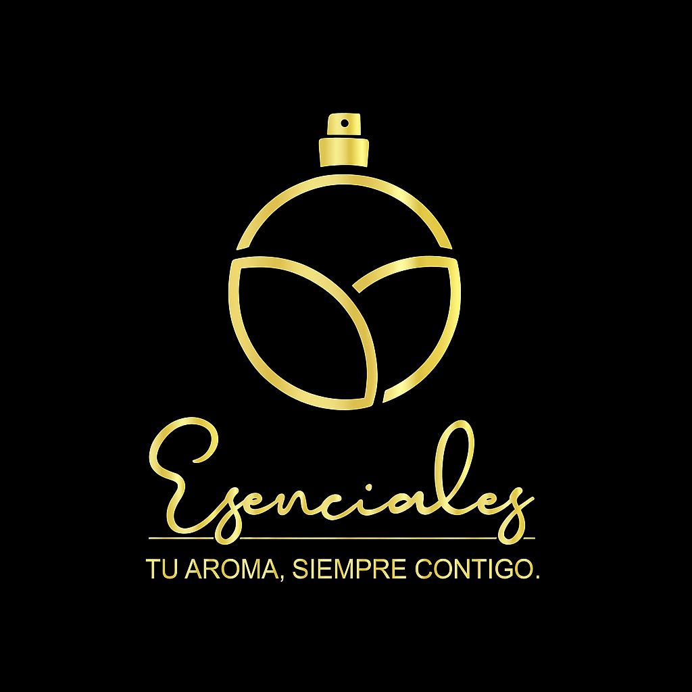

Información dispersa
El catálogo se administra en Excel, fotografías y conversaciones.
Seguimiento de proyecto de grado
UTAP
Presentación del planteamiento, alcance y estado actual para recibir orientación académica.
Janderson Santos Vega · Daniel Steven Contreras Lopez · Marlon Steev
Velasco Paz
Ingeniería de Sistemas · Fundación Tecnológica Autónoma del Pacífico
Septiembre de 2026

Introducción
UTAP
El catálogo se administra en Excel, fotografías y conversaciones.
Los productos se presentan por WhatsApp y pueden enviarse cerca de cincuenta imágenes por consulta.
Productos, precios y disponibilidad no están reunidos en un medio claro y organizado.
Planteamiento
UTAP
¿Cómo desarrollar una aplicación web full stack que permita centralizar la gestión, publicación y consulta del catálogo de productos, precios y disponibilidad del emprendimiento Esenciales?
Dirección del proyecto
UTAP
Desarrollar una aplicación web full stack para centralizar la gestión, publicación y consulta del catálogo de productos, precios y disponibilidad de Esenciales.
Solución propuesta
UTAP
Acceso administrativo y estructura del catálogo.
Productos, presentaciones, precios, imágenes e inventario.
Catálogo público, búsqueda, filtros y navegación.
Carrito, solicitudes de compra y gestión de sus estados.
Límite: el cliente no necesita una cuenta, no se procesan pagos y una solicitud no equivale a una venta. La conversación comercial puede continuar voluntariamente por WhatsApp.
Fundamentos
UTAP
Estos conceptos sustentan una solución en la que la información del producto se organiza, se publica con imágenes y se mantiene consistente, especialmente al administrar precios, existencias y solicitudes.
Plan de trabajo
UTAP
Proceso actual, dificultades, requisitos y reglas de negocio.
Frontend, base de datos, autenticación, imágenes y operaciones.
Pruebas funcionales, correcciones, validación y publicación.
Arquitectura prevista
UTAP
Interfaz pública y administrativa construida con Vite.
Auth para acceso administrativo · Storage para imágenes · RLS y RPC para seguridad y operaciones críticas.
Estado verificable
UTAP
Cierre
UTAP
Queremos corregir oportunamente el enfoque antes de avanzar con la implementación y la validación.